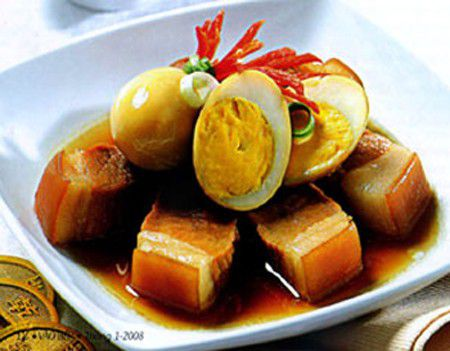

Cùng bắt tay làm thử thôi nào!
Nguyên liệu:
- Thịt heo: 500g, bạn nên chọn loại ba chỉ có nhiều nạc hoặc thịt mông cũng rất ngon nhé;
- Trứng gà: 8 quả (cũng có thể thay thế bằng trứng cút với số lượng nhiều hơn bạn nhé);
- Hành lá: 100g;
- Nước dừa tươi: 100ml;
- Ớt trái đỏ: 3 quả;
- Gia vị: tỏi, hành khô, đường, hạt nêm, bột ngọt, nước mắm, tiêu, ớt bột (hoặc bột điều nếu bạn không ăn cay);
Sơ chế nguyên liệu

- Hành khô, tỏi: làm sạch, băm nhuyễn;
- Thịt heo: Bạn làm sạch, rửa qua với nước muối, để ráo, cắt miếng vừa ăn dạng hình hộp chữ nhật. Sau đó, bạn ướp thịt với ½ thìa hạt nêm, 1 thài nước mắm, 1 thìa bột ngọt, ½ thìa đường, ½ thài tỏi, ½ thìa hành, ½ thìa tiêu trong 30 phút để thịt ngấm gia vị và đừng quên 1 thìa dầu ăn để thịt nhanh thấm gia vị hơn nhé;
- - Trứng gà: Luộc chín, ngâm trong nước lạnh cho dễ bóc vỏ, để ráo nước và chiến sơ qua với dầu để trứng có màu vàng nhẹ đẹp mắt và ngon hơn khi ăn. Bạn nhớ để trứng thật ráo mới chiên nhé để khi chiên không bị bắn mỡ ra ngoài;
- - Làm nước màu: cho 2 thìa đường và 2 thìa nước, đun nóng trên chảo với lửa nhỏ đến khi đường tan chuyển sang màu vàng cánh gián là được;
- - Hành lá: Làm sạch, thái mịn;
- Ớt trái: 1 quả tỉa hoa trang trí, 2 quả thái lát theo chiều xiên của quả ớt.
Thực hiện món thịt kho trứng
Phi thơm ½ thìa hành, ½ thìa tỏi với dầu ăn và ½ thìa ớt bột (hoặc bột điều);
Cho thịt vào đảo đều tay để thịt thăn lại, các gia vị ngấm đều vào nhau;
Tiếp đó, cho 100ml nước dừa tươi và trứng gà đã chiên vàng vào, rưới nhẹ nước màu đã chuẩn bị sẵn lên trên thịt và trứng;
Vặn lửa nhỏ, đảo nhẹ tay đến khi thịt và trứng chín đều, nước kho thịt vừa sền sệt bao quanh trứng, thịt là được.
Tắt bếp, rắc hành lá, hạt tiêu lên trên là bạn đã hoàn thành món thịt kho trứng thơm ngon rồi đấy.
Yêu cầu món thịt kho trứng
- Món thịt kho trứng ngấm gia vị, vừa ăn.
- Nước kho có màu cánh gián đậm bao quanh thịt và trứng trông rất hấp dẫn và đẹp mắt.
- Khi ăn bạn cảm nhận được vị ngon của trứng, vị ngọt của thịt, vị thanh ngọt của nước dừa tươi, tất cả hòa quyện với nhau tạo thành một hương vị rất đặc trưng.
Trình bày và thưởng thức món ăn
- Bạn bày món thịt kho trứng ra đĩa, có thể rắc thêm một ít hành lá và ớt tỉa hoa cho đẹp mắt nhé.
- Nếu nhà bạn là “tín đồ” của các món ăn cay thì bạn có thể rắc thêm ớt trái thái lát lên trên để ăn kèm với thịt cũng rất hấp dẫn. Nếu không thì bạn để ớt ra một đĩa riêng và ăn kèm nếu thấy cần thiết để làm món ăn thêm đậm đà;
- Món thịt kho trứng này bạn dùng với cơm nóng là phù hợp nhất. Riêng phần nước kho, bạn nên trộn thêm một ít nước sôi và sử dụng để chấm rau, củ luộc thì thật tuyệt vời đấy nhé.
Trên đây là hướng dẫn cách nấu thịt kho trứng thơm ngon lạ miệng mà các bạn có thể dễ dàng thực hiện trong nhà bếp. Chúc bạn chế biến thành công món ăn này để làm phong phú thêm thực đơn hàng ngày cho cả gia đình và ăn ngon miệng nhé.